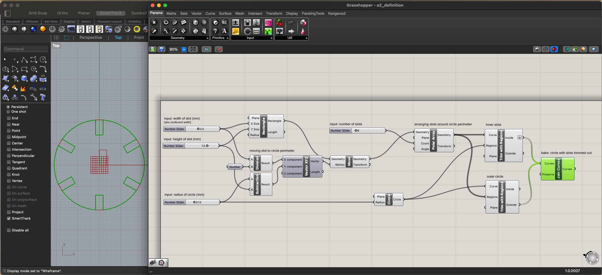
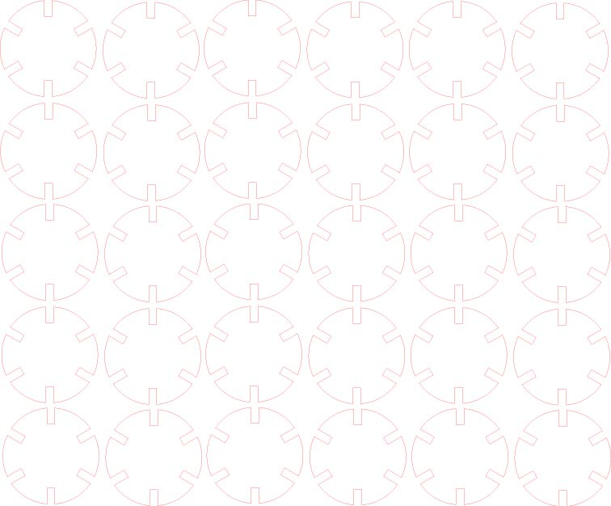

For this assignment, we needed to create another 30-piece laser cut press fit kit, this time via parametric modeling with Grasshopper. I decided to keep it simple and stick to one shape - a circle, with slots! Wooo! A screenshot of the Grasshoper definiton and resulting Rhino model is below. In Grasshopper, I configured the definition so that one can input: the width and height of each slot in mm, the number of slots, and the radius of the circle in mm. To solidify the object in Rhino, you bake it at the final 'Join Curves' step.
 For my kit, I created a circle with a 21mm radius and six 3.5x7mm slots. The slots are 3.5mm wide to match the cardboard's width, which I measured with a caliper in Assignment 1. I used leftover cardboard from the same batch as Assignment 1, so I generally had much less trial and error this time around with measuring, fitting, and cutting.I then moved that shape into Illustrator in order to cut it with the laser at the 8. I exported it as an .ai file from Rhino, ensuring that it retained its 1mm per unit scale. I made a couple test cuts first to confirm that the pieces fit together as expected and that the scale had been converted properly (it had!! ayeeee). Then I duplicated the shape 30 times with a red 0.01pt stroke, per the requirements of the laser cutter at the 8.
I used the same laser cutter settings as I did in Assignment 1 - I set the material to Mat Board and thickness to 2.5mm, leading to a power of 33%, speed of 12%, PPI of 500, Z-Axis of 2.5mm, and Laser of Both (full transparency, I still don't know whether this is necessary to note or what it means). But it worked! The cuts were once again crispy n clean, and the shapes gave big nuclear waste area vibes.
The final kit contains 30 pieces of spooky circle. They can become a mars rover, a radar tower, whatever you like. Go nuts!